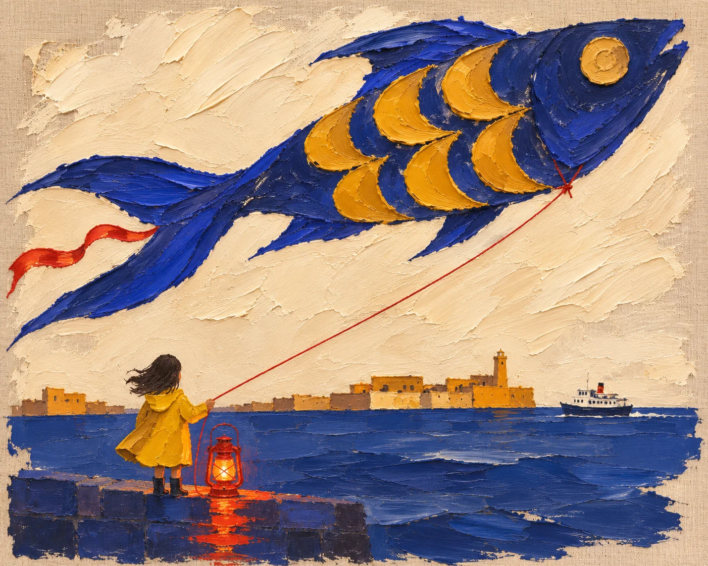
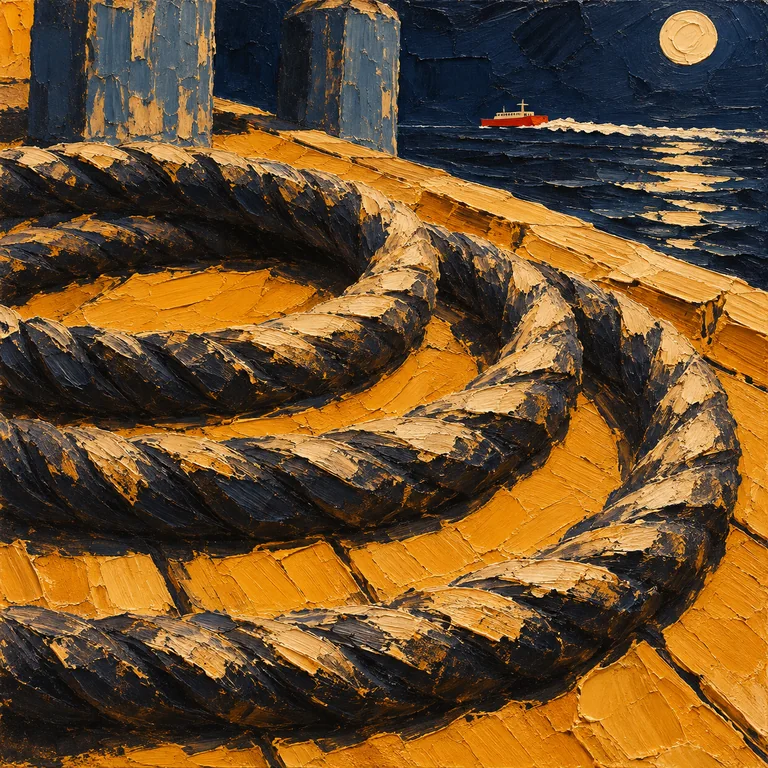

Impasto oil painting · A double bill
Harbour Sketchbook

In the fog, a red lantern waits for the last ferry. When the wind picks up, a gold-scaled fish takes flight beside the number six bus.
Watch the filmsThe Last Ferry
The landing bell is broken. Through the fog, a girl raises a red lantern and waits for the harbour to answer.
Scene index
English transcript
Sketchbook / Pigment
Let the light skim the paint
Where the knife lifts, it leaves a little ridge of blue. Move the light from left to right and watch the highlight cross to the other side.
Three frames tucked between the leaves
Select a still to see it move



Original soundtracks
Harbour nocturnes
How Gemini was used for the score
Each film has its own instrumental written in Google Gemini’s Create music. Here are its original prompt and the passages used in the film. The final mix also includes separately written chamber music, field recordings and foley.
The painter’s notes
The next page is yours.
Begin with a small action that leaves a trace. A spoon, a piece of blue cloth and six crescents of gold give a kite its first set of scales.
Read the painting guide ↗Start a film in this style
Open the repository in Codex and describe your film.
Starter & staging notes
Art, film & sound credits
The fish-kite cover and record sleeve were painted with ImageGen for this screening. The three stills come from the films. The pigment page uses twelve lighting passes from their WebGL renderer.
The knife renderer adapts Lemomo (LemoLab)’s MIT-licensed engine. Style reference ↗ · Provenance ↗
Water, working rope and diesel recordings were edited from three CC0 sources. Alex_hears_things · Rmutt · Sandermotions.
The Last Ferry also excerpts, filters, pans and mixes LG’s Rotterdam boat recording. Diesel engine boat 100214.wav · CC BY 4.0 · VSCO 2 CE.
Display lettering · Ma Shan Zheng · Instrument Serif.